A complete goal-management system for Odoo Community: objectives at five levels, a real KPI engine, a check-in rhythm that produces evidence, and a review cycle that ends in a calibrated score somebody can defend.
Targets get written in January and reopened in December. Halfway through, nobody can say whether 20% is fine or a disaster. The number behind a KPI is re-argued every quarter because nobody wrote down what it means. And when scores finally land, they are compared across managers who never agreed on what a good one looks like.
Three practices prevent that, and this suite is built around them: a documented measurement, a cadence that produces evidence, and governance that makes a mid-cycle change a decision instead of an edit.
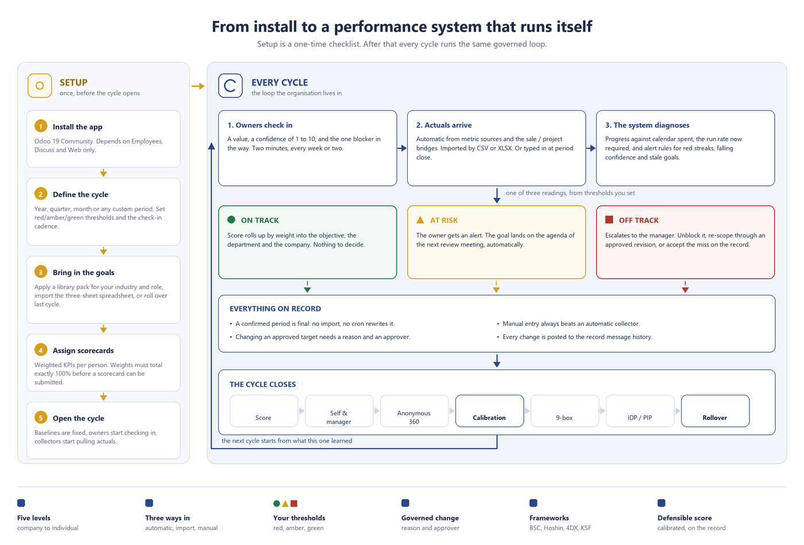
Each stage leaves behind something the next stage can use.
Objectives at company, branch, department, team or individual level with weighted key results. Four ways in: the form, a three-sheet Excel import, a rollover from the previous cycle, or a ready-made pack from the role library. Weights must reach exactly 100% before a scorecard can be submitted.
Check-ins carry a value, a 1-10 confidence and the one blocker in the way. Actuals also arrive automatically from metric sources and the sale/project bridges, or monthly by CSV/XLSX import from systems outside Odoo.
Pace diagnosis compares real progress against calendar spent and computes the run rate now required. Alert rules escalate red streaks, falling confidence and stale goals. Review meetings build their agenda from what is red, stale or blocked.
Mid-cycle target changes go through an approved revision with a written reason. At cycle end: scoring, a review route map, anonymous 360, calibration, 9-box, and a rollover that carries unfinished work into the next cycle.
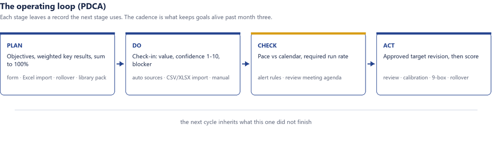
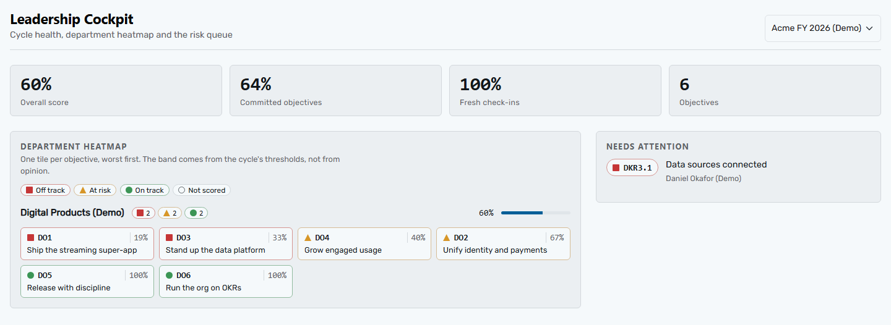
Every KPI carries its full documentation form, so the argument happens once and the operator knows exactly where the number comes from.
| Business definition | What this measures, in language the operator and the executive both accept |
|---|---|
| Formula and unit | The documented calculation - recorded for humans, never executed as code |
| Direction | Higher-is-better, lower-is-better, or pass/fail. Lower-is-better targets must be strictly positive: “zero incidents” is modelled as pass/fail, because a linear achievement formula is undefined at a target of zero |
| Aggregation | Final value, average or cumulative - how period results roll into the cycle number |
| Frequency and source | Which system or report the number comes from, on what cadence, and who confirms it |
| Leading or lagging | Whether it predicts the result or reports it |
| Thresholds | Red/amber/green bands inherited from the cycle, or overridden for this KPI alone |
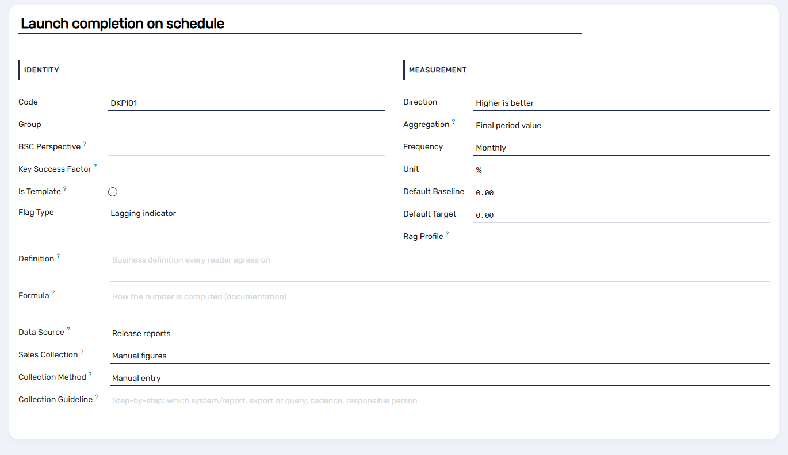
Scoring follows the Google OKR convention: normalised 0.0-1.0, clamped to the cycle cap, with configurable thresholds (0.4 / 0.7 by default). Committed and aspirational objectives are scored separately, so a stretch goal landing at 0.7 is not read as a miss.
Balanced Scorecard, Hoshin Kanri and 4DX ship built in, each with its own dimensions. An objective can carry dimensions from more than one framework at a time.
Tag objectives and KPIs as Financial, Customer, Internal Process or Learning & Growth, then group any goal list by perspective and look at the shape. A portfolio that is all Financial is borrowing against next year; nothing in Learning & Growth means the capability that produces future results is not being built.
A starter catalogue of the few areas where the strategy lives or dies. Each objective declares the factor it drives; each KPI declares the factor it measures. A factor with no measuring KPI is something you called critical and cannot see.
Breakthrough bets, daily management and local improvement are distinguished explicitly, so the whirlwind of necessary operational work does not quietly crowd out the three to five changes the year actually exists for.
Objectives cascade inside a cycle or into the containing cycle - a quarterly goal under an annual one - plus soft “contributes to” links across the tree.
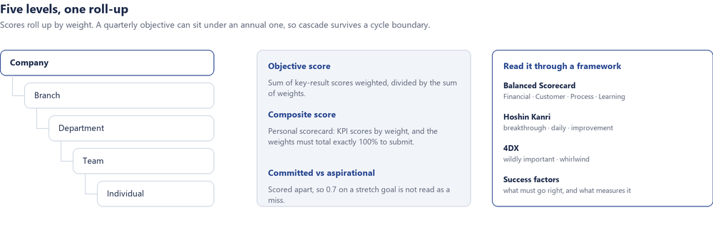
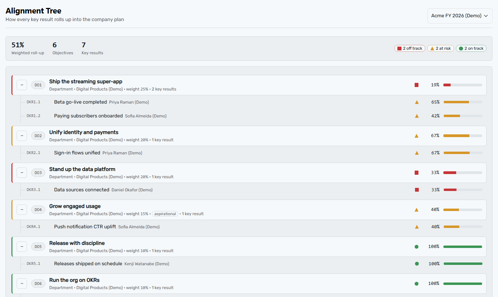
Aggregate any allow-listed model on a schedule. The optional bridges pull task progress into key results, and quotations, confirmed orders and posted invoices into sales KPIs.
Monthly exports from MES, helpdesk or analytics land through the actuals import wizard, with a preview and a per-row report before anything is committed.
Everything else is typed in by the owner. Each role in the library ships a collection playbook saying where its numbers live and who confirms them.
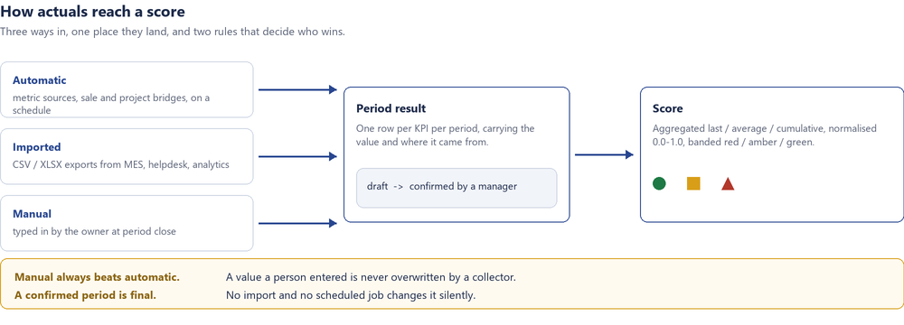
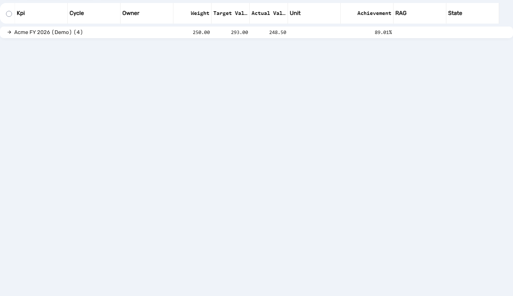
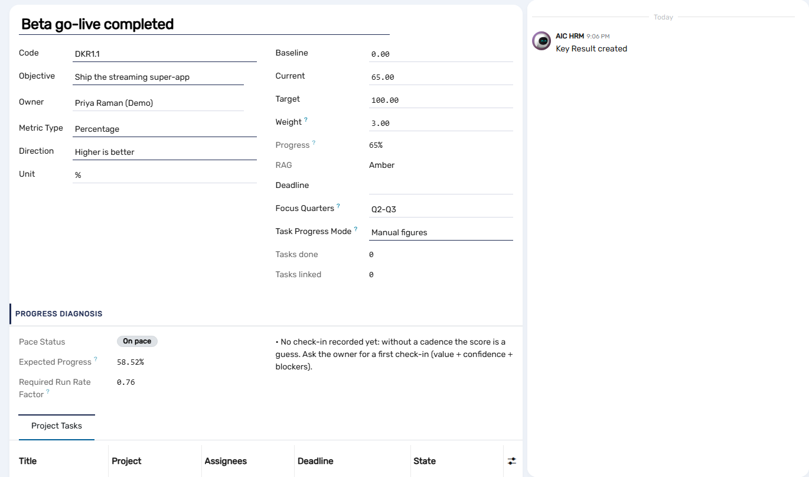
Build the review as stages - self-assessment, manager, peer, calibration, sign-off - with your own form, sections and question types. The goal score is snapshotted when the review is generated, so later edits to goals never rewrite history.
Aggregates appear only once the minimum number of raters has answered. Rater identity is hidden at field level and responses are written by the system account, so no author trail points back at a rater.
Compare scores across teams before they are final. Changing a score requires a written justification, and an applied line can be neither edited nor deleted afterwards - by anyone, administrators included.
Performance against potential on a strict 3×3 grid, development plans with actions and owners, and improvement plans with 30/60/90-day checkpoints.
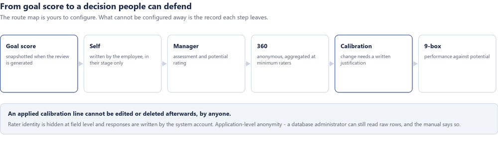
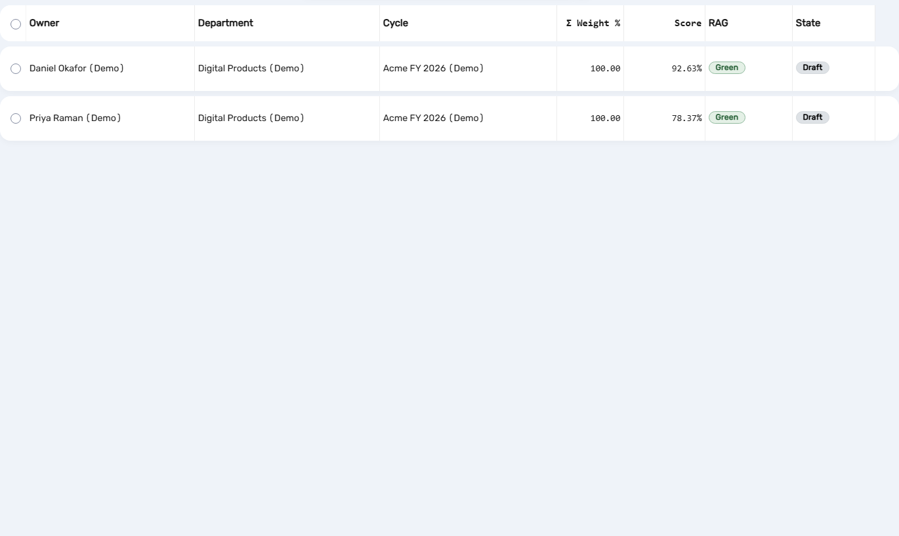
Ten industries and twenty-five roles of ready-made objective and KPI templates, written in the KPI documentation practice and informed by the ISO 30414 human-capital indicator families. Pick your industry, pick the role, apply the pack into a cycle, then edit the drafts - the templates are reference points, not prescriptions.
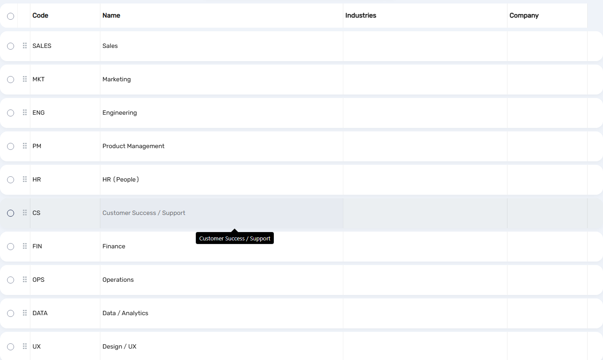
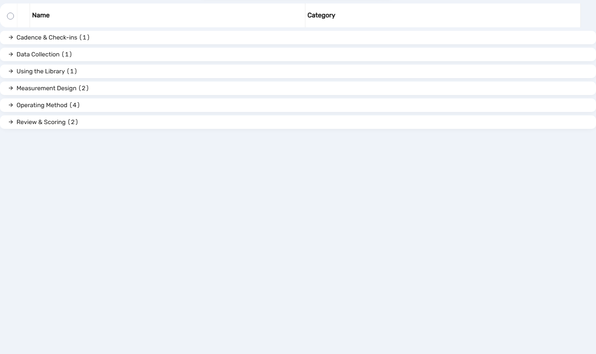
Cycles run in parallel and nest - a quarter inside a year. Closing and locking a cycle stops business edits; corrections after that go through an approved revision, not a quiet write.
A change to an approved target, weight or owner records the old value, the new value, the reason and the approver, and posts all of it to the record's message history.
Record rules follow the Odoo manager chain and company boundaries. Metric sources evaluate with the caller's own access rights, and only against models an administrator has allow-listed.
360 anonymity is enforced at application level. A database administrator with direct SQL access can always read raw rows - the documentation states that rather than implying a guarantee it cannot make.
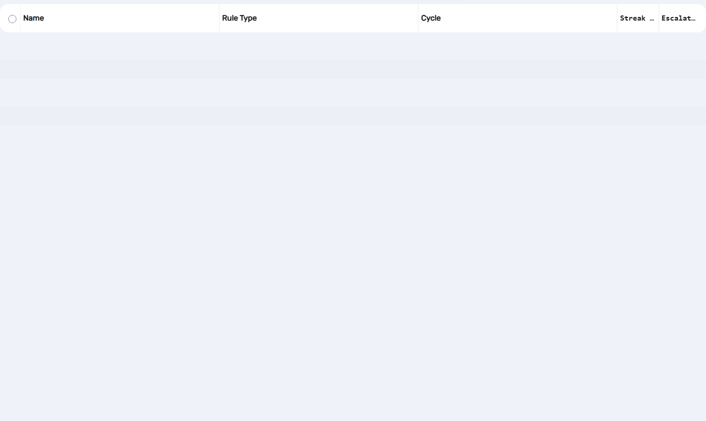
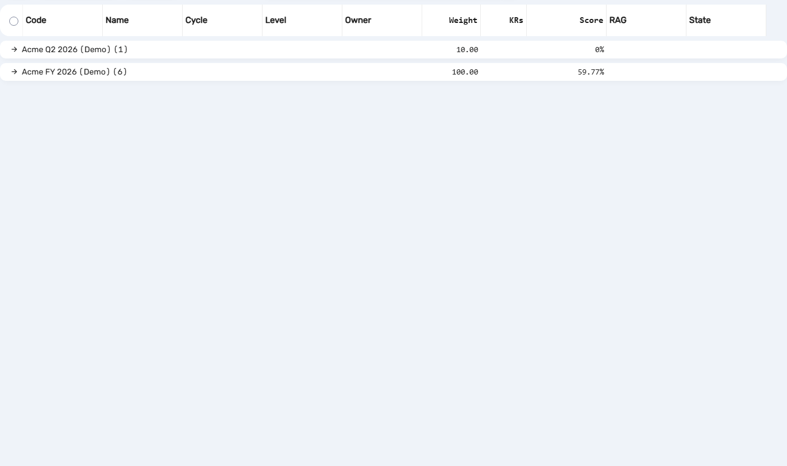
Screenshots are taken on the demo dataset that ships with the app. The application area is shown on its own; an optional backend theme was used for the surrounding shell and is not part of this product.
| Odoo version | 19.0 Community. An 18.0 backport is maintained and available on request. |
|---|---|
| Dependencies | Employees (hr), Discuss (mail), Web - Community only. No Enterprise app required. Excel import uses the openpyxl Python package, with a clear message if it is not installed. |
| Installed by this app | AIConnect HRM Base · AIConnect OKR & KPI · AIConnect HRM Review · AIConnect HRM Library |
| Optional bridges | AIConnect HRM Project and AIConnect HRM Sale, installed separately when the matching Odoo app is present |
| Languages | English and Vietnamese. Japanese ships as a flagged draft, marked as needing native review rather than presented as finished. |
| Demo data | A fictional dataset modelled on a real digital-product department: weighted objectives totalling 100%, a KPI catalogue with directions and aggregation methods, and personal scorecards summing to 100%. |
| Licence | OPL-1 |
We build Odoo systems for companies that intend to run on them. If you want this suite configured against your own cycles, industries and reporting lines, that is work we do as well.
Part of the AIConnect range for Odoo, alongside AIConnect AI Agent Helpdesk.
Website: aipower.vn/en
Sales and support: sales@aipower.vn